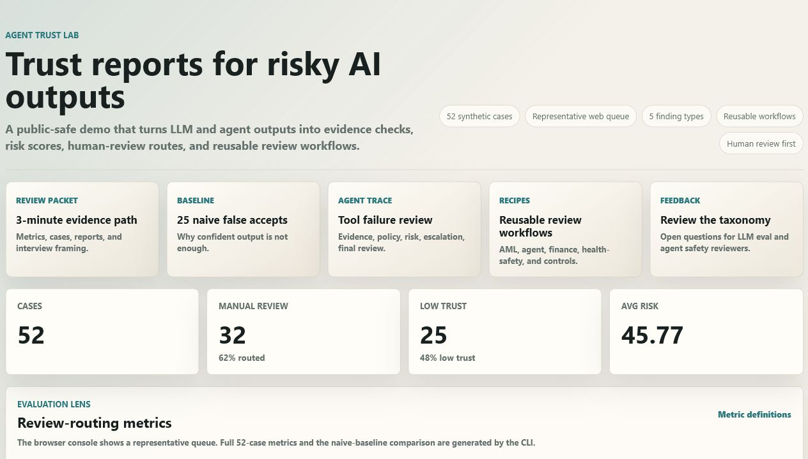

Main exhibit
Agent Trust Lab
A browser-visible review console that converts risky LLM or agent outputs into trust reports, findings, risk scores, and human-review routes. It is built for the question behind my career transition: when should an AI answer be trusted, escalated, or rejected?
52 synthetic cases
48% naive false-accept rate
CI + GitHub Pages
